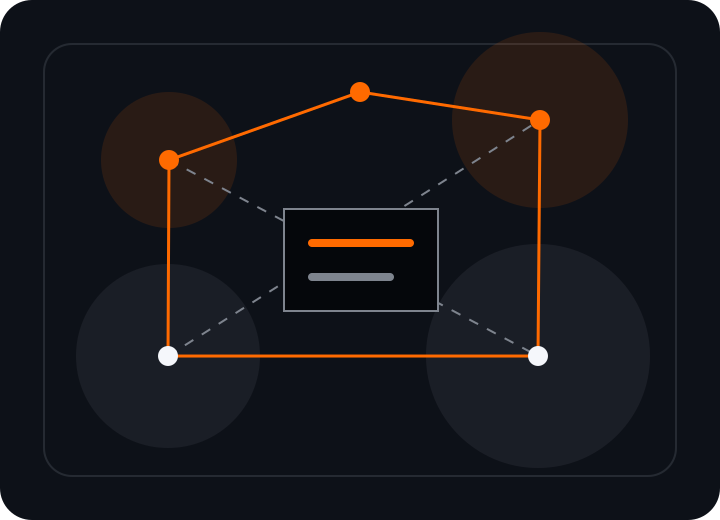

ING_SYNC
Where machines speak the same language
IoT connectivity, industrial nodes, protocol interoperability, and real-time operational sync.

Digital Industrial Operating Ecosystem
ING_DIGHUBFrom Industrial Engineering to Digital Intelligence
ING_DIGHUB connects industrial engineering, automation, AI systems, IoT infrastructure, technical documentation and operational analytics through one intelligent ecosystem.

The ING_DIGHUB Ecosystem
Where machines speak the same language
IoT connectivity, industrial nodes, protocol interoperability, and real-time operational sync.
Smart trade for smart factories
AI-assisted sourcing, supply chain intelligence, logistics orchestration, and asset lifecycle visibility.
From concept to automation
Advanced engineering execution, automation architecture, technical validation and deployment readiness.
Decisions powered by data
Predictive analytics, KPI intelligence, industrial dashboards and AI-driven operational insights.
Industrial knowledge. Structured digitally.
Documentation governance, digital repository operations and technical knowledge continuity.
Core Technologies
Machine-learning assisted diagnostics, predictive action plans and assisted industrial decision support.
Edge-ready telemetry, secure connectivity layers and unified communication protocols across assets.
Control architecture, orchestration workflows, and robust execution models from concept to operation.
Structured pipelines, quality-controlled reporting and technical dashboards for executive and plant teams.
Industry Solutions
Operational optimization, quality intelligence and machine integration for converting lines.
Engineering-to-execution workflows designed for throughput, traceability and technical reliability.
Smart warehouse coordination, route-aware material flow and infrastructure-level visibility.
Digital Infrastructure
Structured technical repositories with controlled access, searchable assets and reproducible knowledge.
Scalable infrastructure for field data, process files, and cross-functional engineering collaboration.
Operational intelligence pipelines built for real-time status, trend analysis and execution confidence.
Trust & Expertise
Designed for operational continuity, integration quality and infrastructure resilience.
Deep engineering experience combined with modern SaaS, AI and analytics architecture.
Measured outcomes, structured delivery and technically sound implementation paths.
Contact
Tell us the environment, infrastructure and operational target. We map a clear technical route.